Study of the convergence depending on the parameters of the algorithm
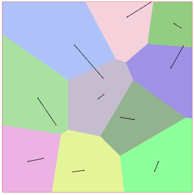
Relocation vectors
Calculation
The visualization of the relocation vectors is obtained by plotting the segments between the generators before and after Lloyd's iteration. The generators of the cells in the previous iteration have been drawn in red.

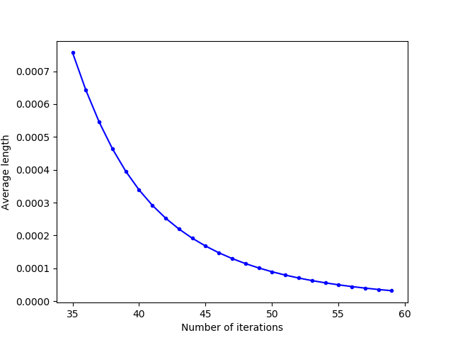
Convergence
For the plotting of the convergence curves, we saved the different values in .txt files and processed the data in Python language, with the matplotlib.pyplot library. We can see that this evolution is globally decreasing, with an increase in energy when the cells "unblock" after having converged to a local minimum of energy.
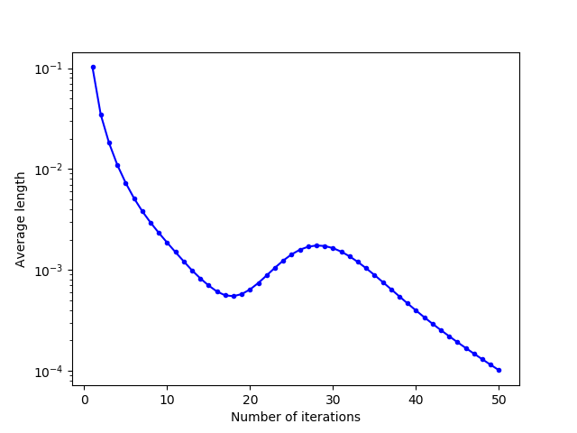
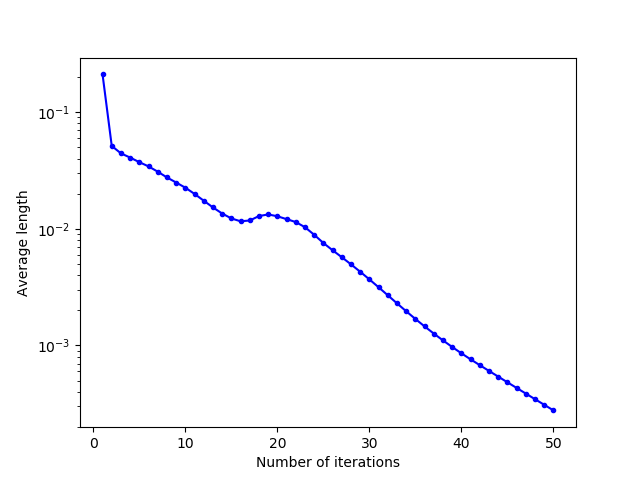
By zooming the first convergence curve between $30$ and $60$ iterations and plotting it in real scale (and not in logarithmic scale as on the different images), it becomes clear that the convergence of the mean length is quadratic.
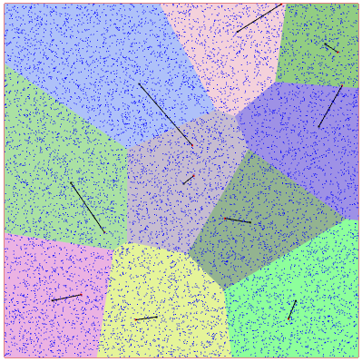
Energy distribution by cell
Calculation
The global energy of a domain partition in $N_c$ cells $\mathcal{C}_i$ is given by the following formula:
$$E_{dom} = \sum_{i=1}^{N_c} E_{cell} = \sum_{i=1}^{N_c} \int_{x \in \mathcal{C}_i} ||x-x_i||^2 dx$$
To carry out the calculation of integrals, we proceed by Monte-Carlo method, by sampling a number $N$ of points $x_j$ on the whole domain and by approximating the integral by a discrete sum:
$$E_{cell} = \int_{x \in \mathcal{C}_i} ||x-x_i||^2 dx = \sum_{x_j \in \mathcal{C}_i} ||x_j-x_i||^2$$
A representation of this sampling is shown for $N = 10,000$. In order to cover the entire domain sufficiently, we have chosen $N = 100,000$.
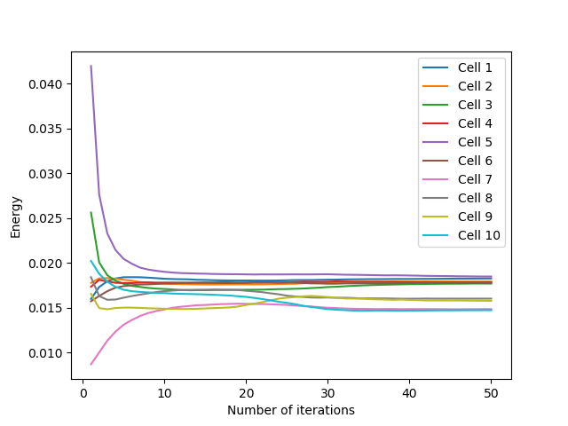
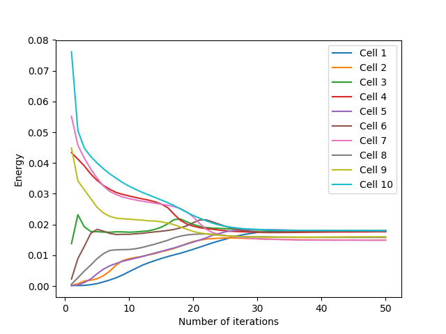
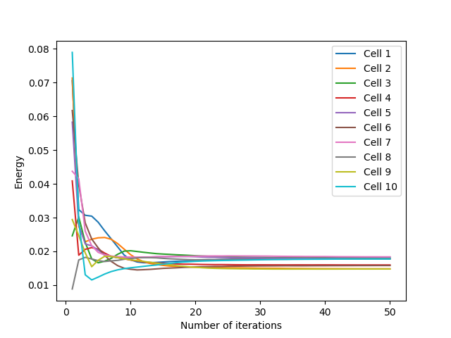
Convergence
Still in the square domain with an initialization of $10$ points, the evolution of the energy of the cells is represented below. For the $3$ initializations tested, we can see that the cells converge to a close energy after about thirty iterations. This convergence is fast for uniform and one-line initializations, with a slight energy correction at about $23$ iterations for the uniform initialization, due to the cells getting stuck (which we find with the growth of the average norm of the relocation vectors around the same number of iterations).
For initialization in a corner, convergence is slower because more iterations are needed to allow the $10$ generators to occupy the entire domain space. However, there is no major energy jump due to a blockage of cells between them.
Domain influence
The shape of the domain greatly influences the convergence results. For example, for the circular domain, which is a "regular" domain in the sense that the edges do not have "corners" or abrupt breaks in direction (the edges are well continuous and driftable), convergence occurs without any problem after about ten iterations and is not characterized by any particular jumps.
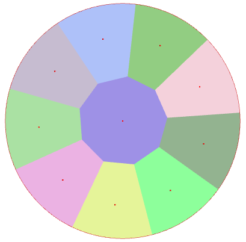
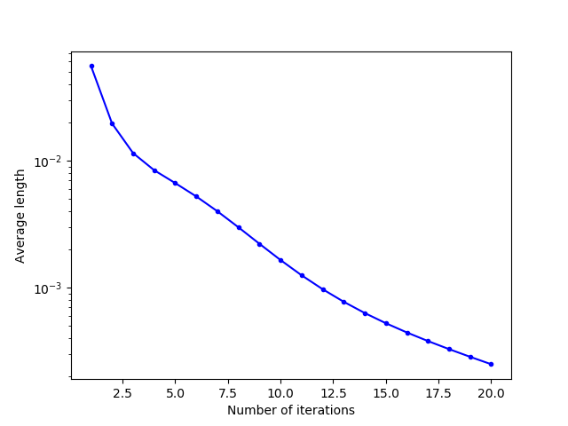
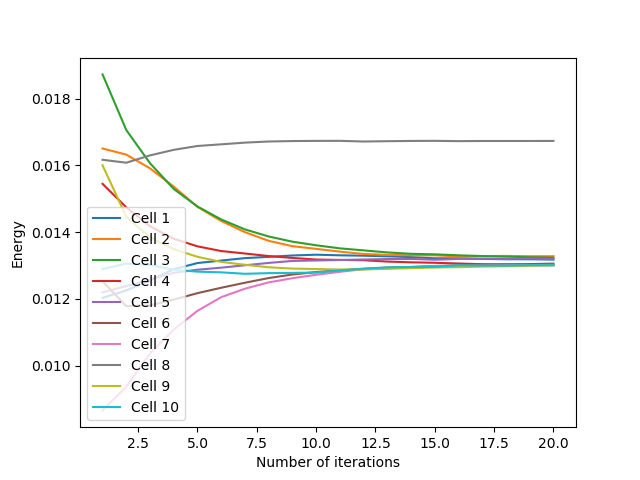
For the other areas provided, more original behaviour can be observed, due to the same observations as those made previously. For the L-shape, the inner corner of the L will cause some increases in average length, as the cells "crossing" the corner move quickly at once to adapt to the shape, and convergence is quite slow relative to the square and circular shapes.
For the key-shaped domain, convergence is also slower due to the complexity of the domain, and medium-length jumps are more important due to this complexity, because cells move a lot when a "corner" is crossed and filled by the cells.
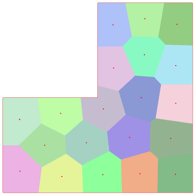
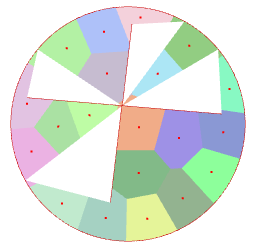
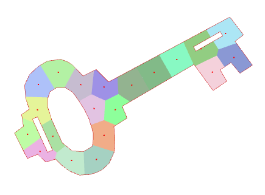
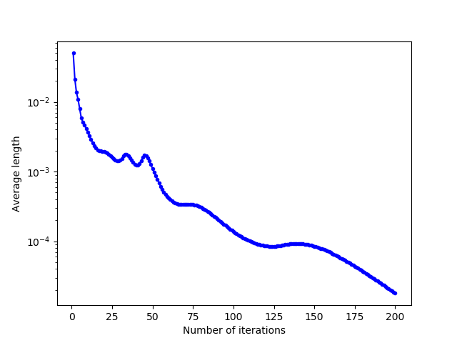
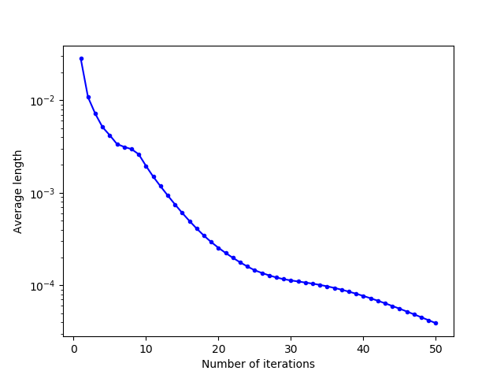
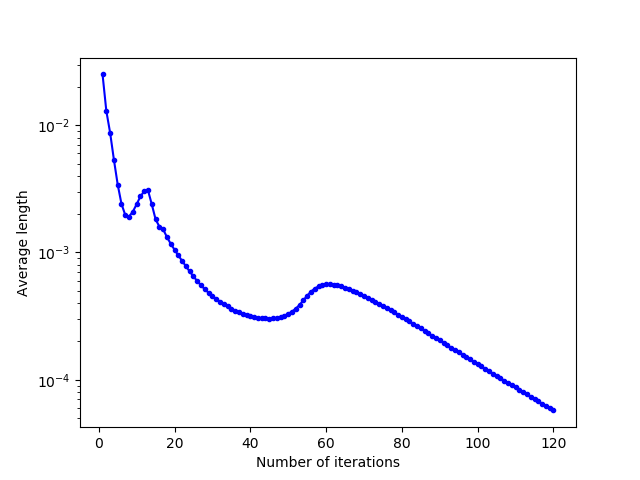
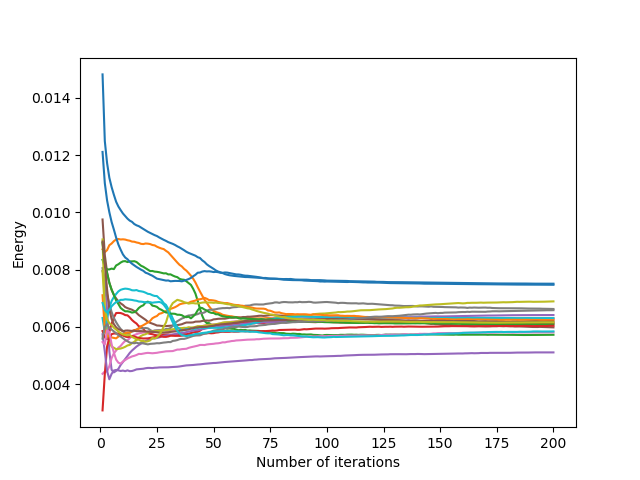
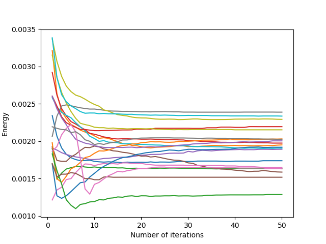
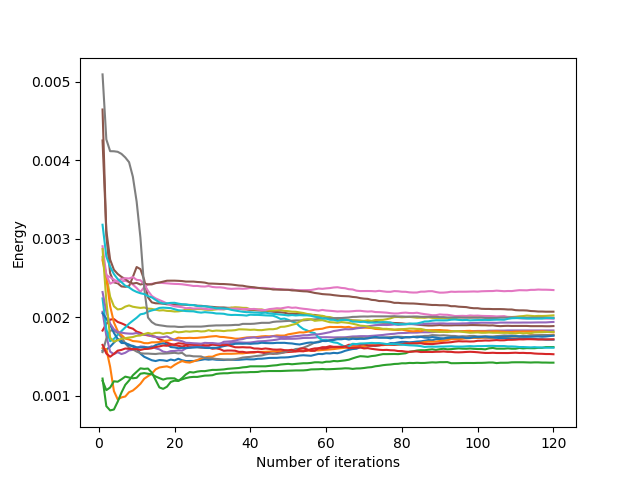
For hourglass-shaped domains (hard-coded in C++ code according to a parameter corresponding to the size of the bottleneck), this difficulty for the Lloyd's iteration to cross corners or narrow passages is clearly highlighted. Indeed, we can see that, in general, the narrower the bottleneck, the longer the cells take to cross the bottleneck, and thus the greater the average length rise when the bottleneck is crossed.
Initialization: The observation on all domains leads us to think that for fairly simple and regular domains, a uniform initialization is quite efficient. For more complex domain forms, it is advisable to initialize the algorithm with more generators at the irregular edges of the domain, or at places with narrow passages.
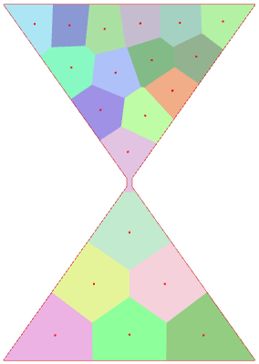
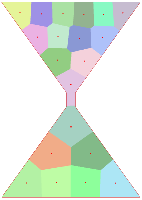
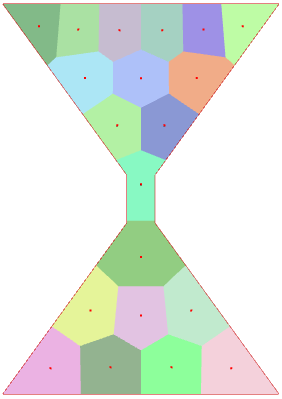
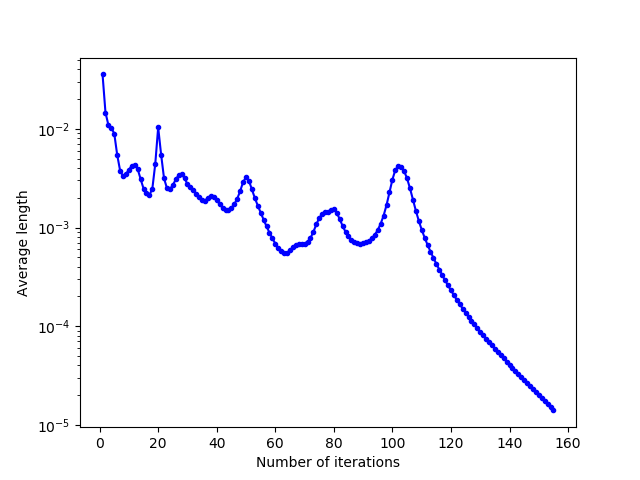
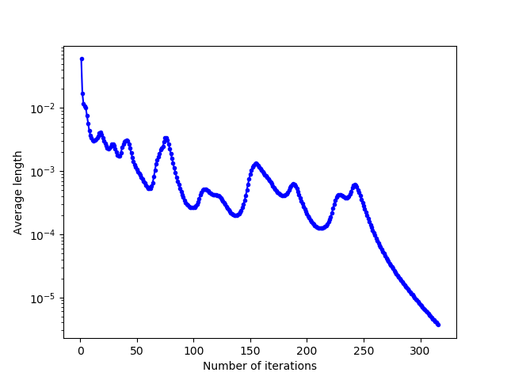
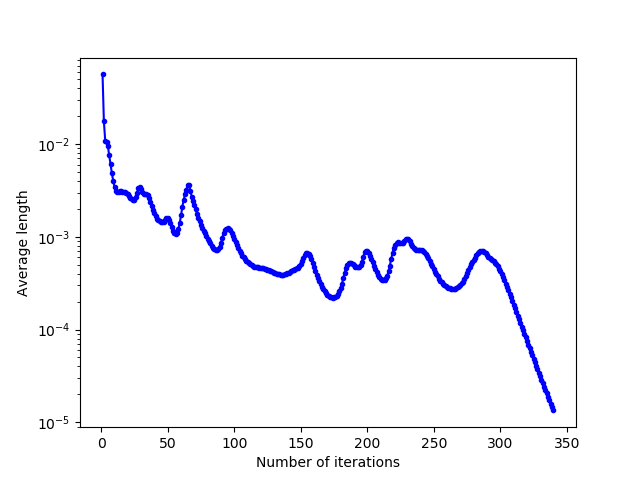
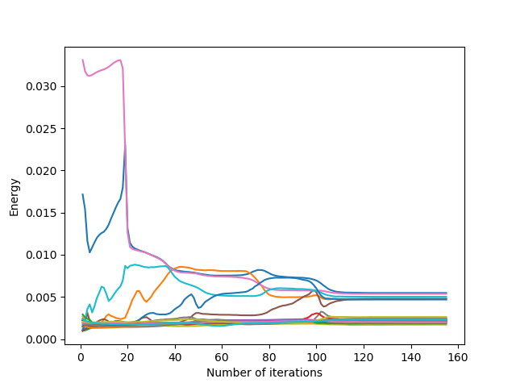
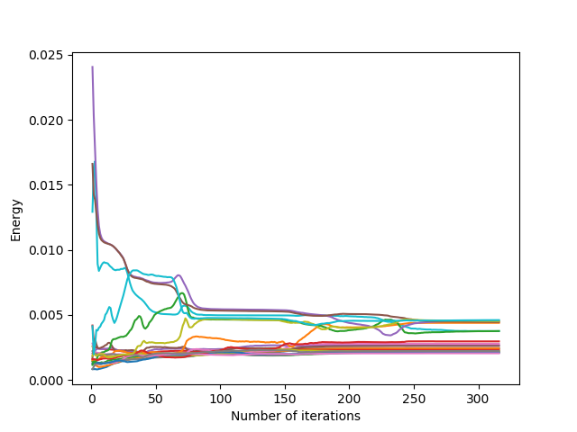
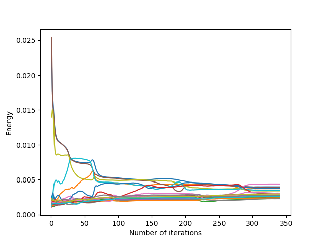
Overshooting and temporal inertia
Overshooting
Overshooting involves moving the generators not to the centres of mass of the cells, but slightly beyond. Informally, we consider the displacement vector $v_N$ at the $N$ iteration of a classical Lloyd's iteration, and instead of moving the generator according to $v_N$, we move it according to $v_{N+1} = (1+\alpha)v_N$, where $\alpha \in \mathbb{R}^{+}$.
There are three classes of behaviour of the Lloyd's iteration according to the value of the overshooting parameter (determined approximately by numerical testing, the limit values of these behaviours change notably according to the shape of the domain and the initialization of the generators) for the square domain and for a uniform initialization:
- $\alpha \in [0,1]$ : the overshooting parameter is quite small: it speeds up the convergence of Lloyd's iteration…
- $\alpha \approx [1, 1 + \epsilon]$ : the overshooting parameter is a bit too big : the iteration leads to a situation where $(1+\alpha)v_{N+1} = -(1+\alpha)v_N$, which causes the generators to alternate between two configurations
- $\alpha >> 1+\epsilon$: the overshooting parameter is much too large: Lloyd's iteration diverges and behaves chaotically.
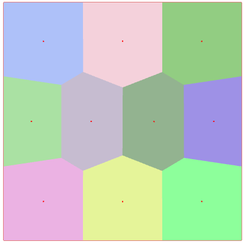
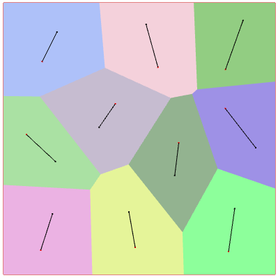
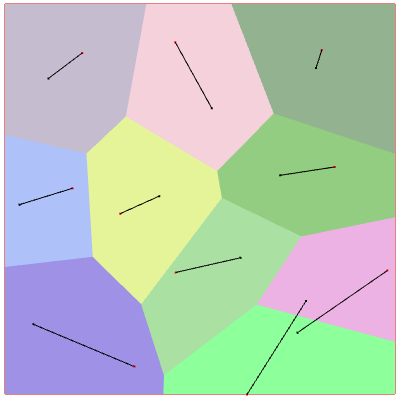
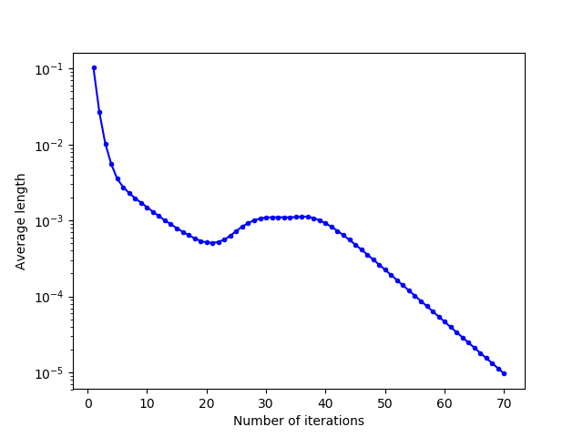
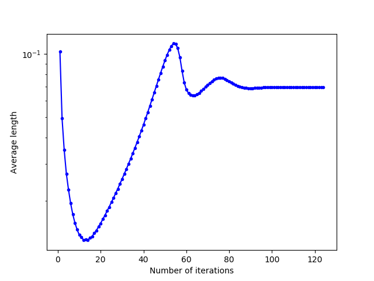
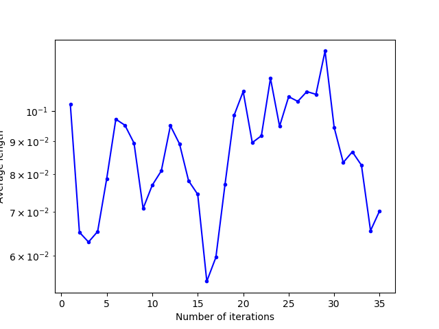
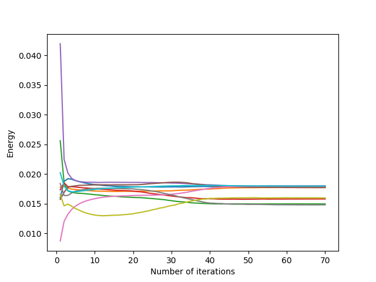
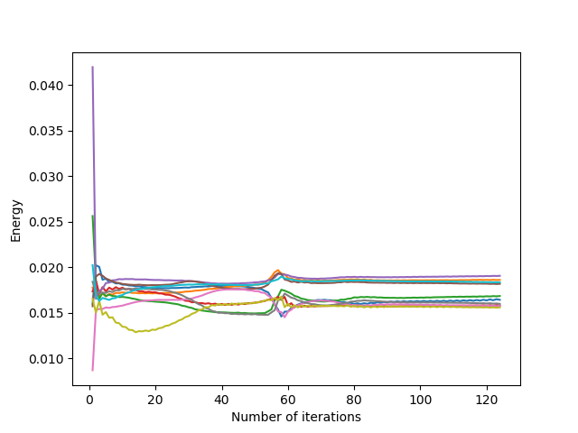
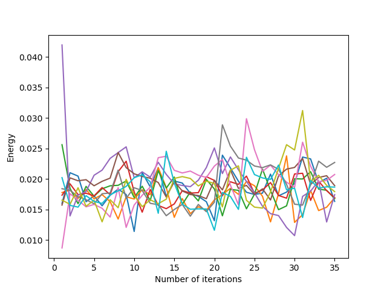
Thus, if the parameter is too large, the Lloyd's iteration may not converge. To prevent this problem, we can impose a rather small $\alpha$ parameter (at least strictly less than $1$, less than $0.5$ if we want to be sure to converge even in particular cases).
Another risk is that if the $\alpha$ parameter is too large, Lloyd's iteration will take the generators out of the domain. To overcome this problem, we could use the inside function of cdt.h file, to apply overshooting to the relocation of a generator only if the new generator is inside the domain.
Temporal inertia
Temporal inertia consists in keeping in memory the centers of mass of the previous iterations, and moving the generators with a linear combination of the previous $n$ displacement vectors. Informally, we move a generator at iteration $N$ according to the vector $v_{N+1} = \sum_{i=N-n}^N w_i v_i$, where the $w_i$ are weights given by the user to the relocation vectors of the previous iterations.
There are three classes of Lloyd's iteration behaviour according to the value of the different coefficients (classes determined approximately by numerical testing, the limit values of these behaviours change in particular according to the shape of the domain and the initialization of the generators) for the square domain and for a uniform initialization, with a number $n = 5$ of displacement vectors taken into account:
- $\sum_{i=N-n}^N w_i \leq 1$: the previous relocation vectors are relatively little taken into account: convergence is accelerated because the generators move faster, since the first iterations concern larger displacements
- $\sum_{i=N-n}^N w_i \approx 1 + \epsilon$: the previous relocation vectors are a bit too much taken into account, and the generators move a bit too much: their positions alternate between $2$ configurations (oscillating behavior)
- $\sum_{i=N-n}^N w_i >> 1+\epsilon$: the first relocation vectors are much too much taken into account, and the addition of vectors with too large coefficients produces larger and larger vectors: the Lloyd's iteration diverges and the generators leave the domain
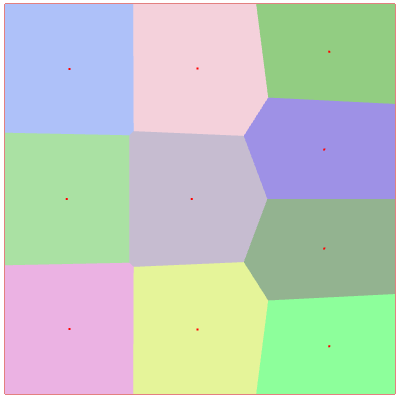
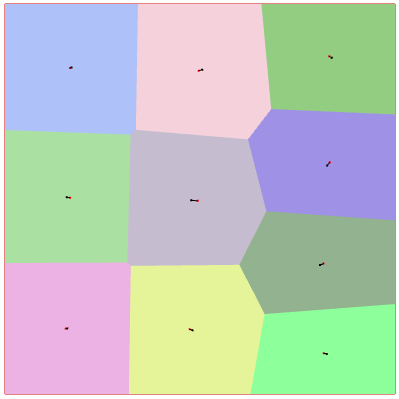
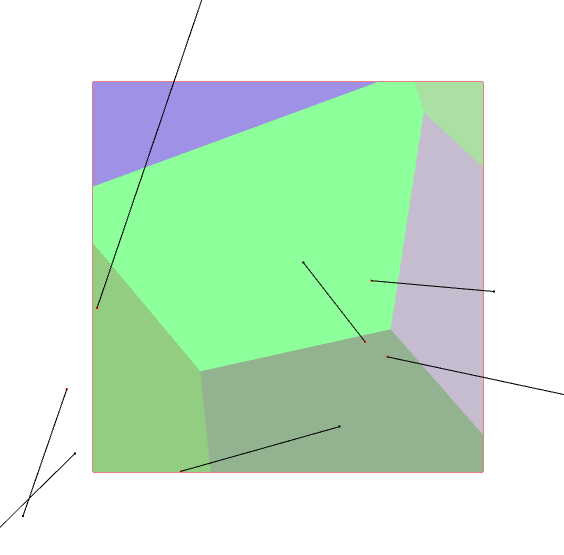
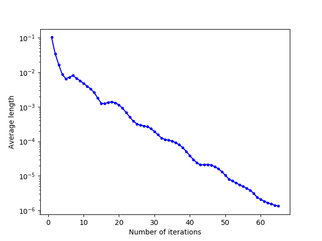
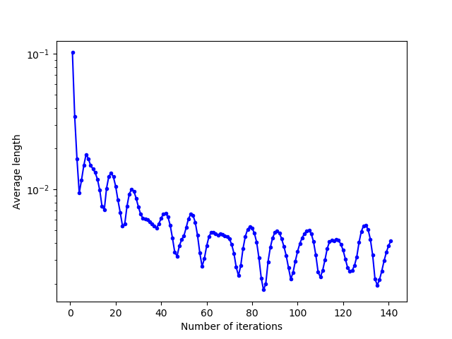
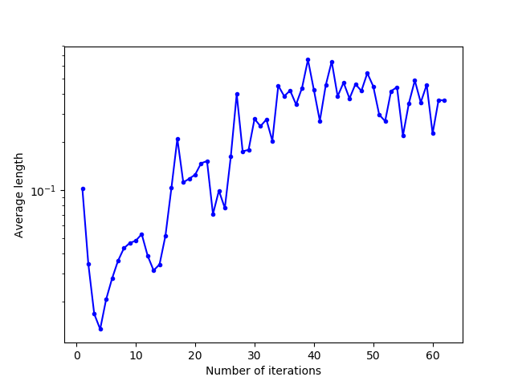
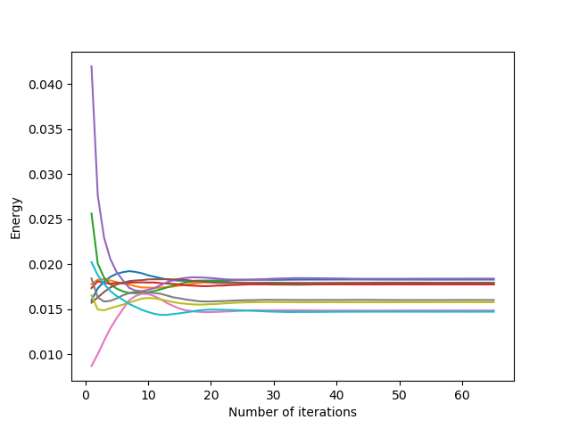
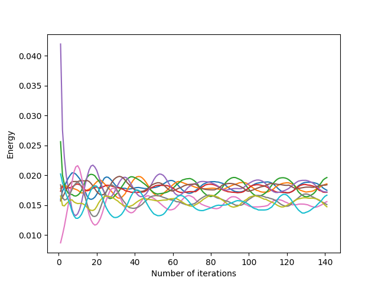
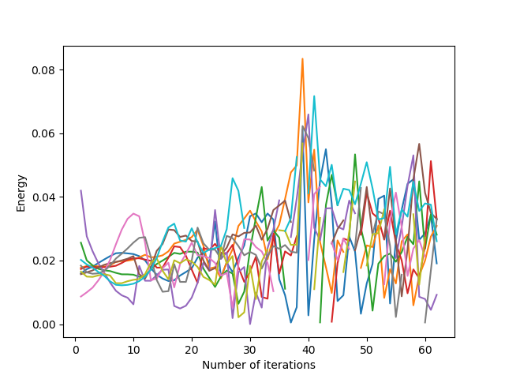
Convergence is faster when the coefficients are not taken too large. Indeed, taking into account the "large" vectors of previous displacements allows the generators to move faster.
However, similarly to the overshooting parameter being too large, too large coefficients cause the algorithm to diverge (and even with small coefficients, convergence with slight oscillations can be seen in the middle image above). To overcome this, we impose small coefficients, or we check that the generators stay inside the domain with inside parameter.